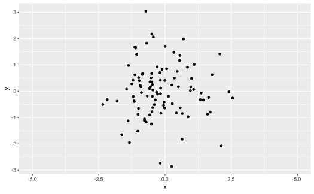
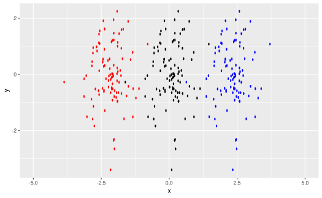

Translate, scale, and rotate ggplot2 layers (Layer operation)
Source:R/class-operation-affine-transform.R, R/operation-affine-transform.R
affine_transform.RdTransform objects within a single layer (geom) or across multiple layers (geoms) using affine transformations, like translation, scale, and rotation. Uses the built-in compositing support in graphical devices added in R 4.2.
Arguments
- object
One of:
A layer-like object: applies this operation to the layer.
A missing argument: creates an operation
A
numeric()orunit()giving the x-axis translation, which takes the place of thexargument.
- x
- y
- width
- height
- angle
A
numeric()giving the angle to rotate, in degrees.
Value
A layer-like object (if object is layer-like) or an operation (if not).
Details
Applies an affine transformation (translation, scaling, rotation) to a layer.
Note: due to limitations in the implementation of scaling and rotation, currently these operations can only be performed relative to the center of the plot. In future versions, the translation and rotation origin may be configurable.
Supported devices
Transformation is not currently supported by all graphics devices. As of this writing,
at least png(type = "cairo"), svg(), and cairo_pdf() are known to support
blending.
affine_transform() attempts to auto-detect support for affine transformation using dev.capabilities().
You may receive a warning when using affine_transform() if it appears transformation is not
supported by the current graphics device. This warning either means (1)
your graphics device does not support transformation (in which case you should
switch to one that does) or (2) your graphics device
supports transformation but incorrectly reports that it does not. Unfortunately,
not all graphics devices that support transformation appear to correctly report
that they support transformation, so even if auto-detection fails, blend() will
still attempt to apply the transformation, just in case.
If the warning is issued and the output is still correctly transformed, this is
likely a bug in the graphics device. You can report the bug to the authors of
the graphics device if you wish; in the mean time, you can use
options(ggblend.check_affine_transform = FALSE) to disable the check.
References
Murrell, Paul (2021): Groups, Compositing Operators, and Affine Transformations in R Graphics. The University of Auckland. Report. doi:10.17608/k6.auckland.17009120.v1 .
Examples
library(ggplot2)
# a simple dataset:
set.seed(1234)
data.frame(x = rnorm(100), y = rnorm(100)) |>
ggplot(aes(x, y)) +
geom_point() +
xlim(-5, 5)

# we could scale and translate copies of the point cloud
# (though I'm not sure why...)
data.frame(x = rnorm(100), y = rnorm(100)) |>
ggplot(aes(x, y)) +
geom_point() * (
affine_transform(x = -unit(100, "pt"), width = 0.5) |> adjust(color = "red") +
affine_transform(width = 0.5) +
affine_transform(x = unit(100, "pt"), width = 0.5) |> adjust(color = "blue")
) +
xlim(-5, 5)
